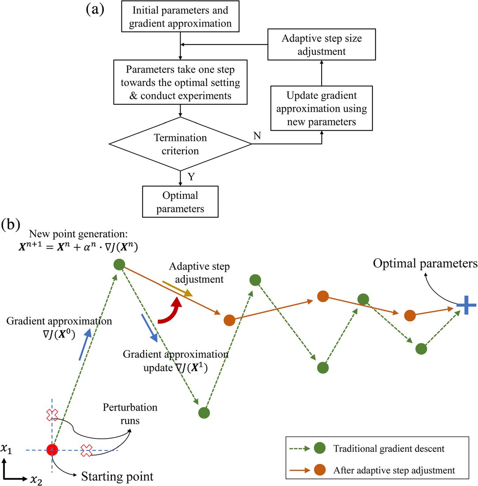
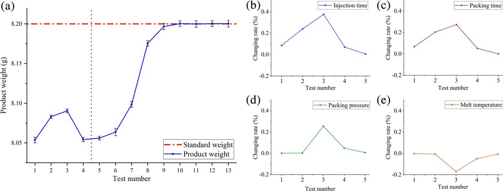

注塑工艺参数自学习优化（IGAO 梯度近似自适应）Self-learning Process Optimization (IGAO)
把注塑“逐批生产、可用上一批反馈下一批”的特性用起来，提出 IGAO 自学习优化：无需大量建模实验，迭代近似梯度并按梯度累积给每个参数自适应步长，最快 11 次试模即可得到标准制件重量，比传统梯度下降少 25% 步数。Exploits the batch-to-batch nature of molding (use the last batch to inform the next): IGAO needs no large modeling campaign—it approximates gradients iteratively and assigns an adaptive step size per parameter via gradient accumulation, reaching standard part weight in as few as 11 trials, 25% fewer than ordinary gradient descent.
背景Background
传统试错/建模优化需大量实验、依赖经验，效率低、不适合复杂件。Trial-and-error or model-based tuning needs many experiments and experience—slow and unfit for complex parts.
方法Method
- 利用批间信息，免去建立大规模优化模型。Use batch-to-batch information, avoiding a large optimization model.
- 迭代近似梯度，按梯度累积为每个参数分配自适应步长。Approximate gradients iteratively; assign an adaptive step per parameter via gradient accumulation.
- 在仿真软件与注塑机上双重验证。Validated in both simulation and on a molding machine.
结果Results
- 从 3 个不同初始参数出发，11 次试模内获得标准重量；较传统梯度下降减少 25% 步数。From 3 different starting points, reaches standard weight within 11 trials—25% fewer than gradient descent.
- 对优化过程扰动具有良好稳定性（快、稳、鲁棒）。Robust to disturbances during optimization (fast, stable, robust).
图片Figures


本人参与该课题组研究（如算法复现、仿真或实验对比等可核实环节）。这也是我后续多目标优化工作的重要思想来源之一。I contributed to this lab research (reproduction, simulation/experiment comparison); it inspired my later multi-objective work.